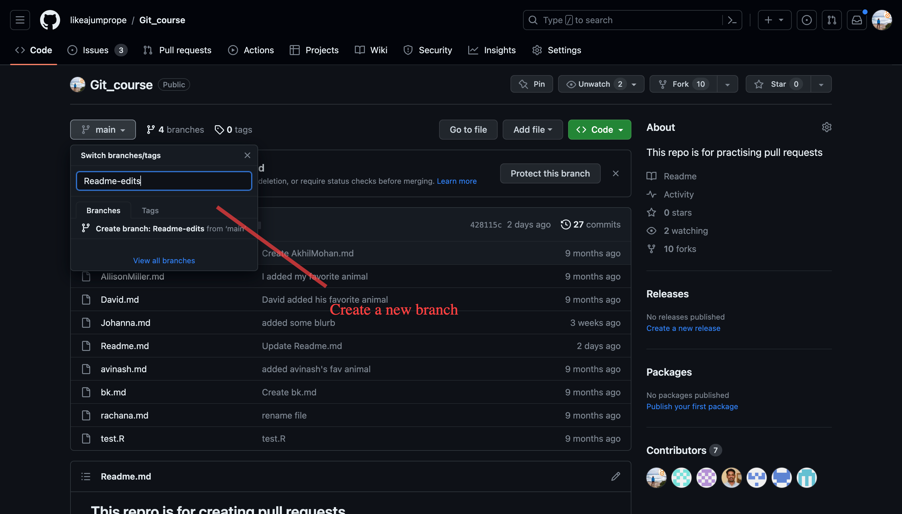
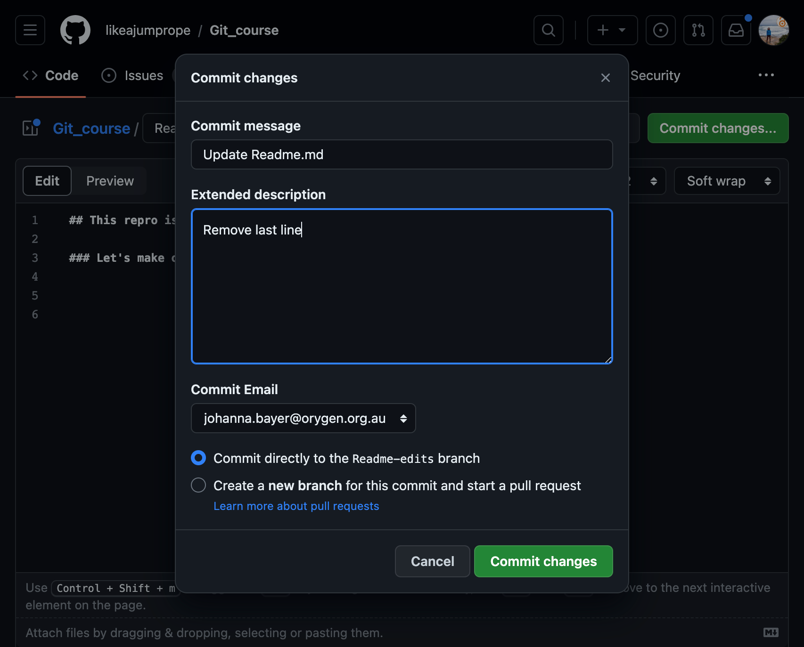

Branching
Branching
Branching is the way to work on different parts and versions of a repository at one time. By default each repository is created with a main branch. You can commit directly into the main branch as we just did.
However, branches are identical copies of the main branch (or any branch you want to copy from), that allow you to implement and test changes before committing them into the main branch (your production branch).
Version control
Let’s play with our newly created repository.
Challenge: create a branch from your main repository
1. Go to your new repository and click the drop down at the top of the file list that says branch: main
The default branch used to be called master branch; due to historic connotations of the word master and as part of a step towards more inclusive langauge the default branch has been renamed to main for new repositories. Older repositories still might have a master branch.
Create a branch Readme-edits. This branch will be a copy of your main branch.

Switch to your new branch.
Click the edit button of the Readme.md file. Add a line to the Readme.md file.
Commit your changes. In this case I have removed a line.

You should now see that your branch has recent edits.

Switch back to the main branch. You should see that the Readme.md file is in the state it was before branching.
Switch back to the Readme-edits branch.
Branches are a good way to test edits to your repository and see whether you like them. If you are not happy with your changes, you can just disregard of your branch and the changes will never affect the content of your main repository.